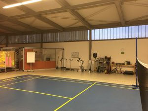
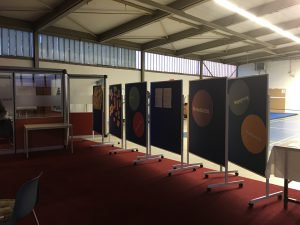

Lean Administration bei DMG
Ein Hauch Silicon Valley in Hamburg-Lurup
Um sich moderne Unternehmen anzuschauen, die sich neuen Arbeitsweisen öffnen, den New Work Gedanken teilweise schon leben, braucht man nicht unbedingt ins Silicon Valley zu fahren. Ein kleiner Ausflug nach Hamburg-Lurup, z.B. zur DMG kann diesbezüglich schon beeindrucken.
Etwas versteckt in der Elbgaustraße liegt die mittelständische inhabergeführte Dental-Firma, in der ca. 350 Mitarbeiter arbeiten. Seit über 50 Jahren werden hier nicht nur Dentalmaterialien produziert und in über 80 Länder weltweit vertrieben, sondern es werden auch sehr viele Ressourcen in die Forschung und Entwicklung neuer Produkte investiert.
Daneben, deswegen bin ich auch so begeistert, wird viel Wert nicht nur auf die Kontinuierliche Verbesserung in der Produktion, sondern auch in der Administration gelegt. Mit Lean-Methoden hat man in der Produktion Erfolge erzielt und das Arbeiten nach diesen Methoden jetzt auf alle Unternehmensbereiche ausgeweitet.
Lean Round Table
Über einen Veranstaltungstipp auf XING bin ich auf den Lean Round Table gestoßen, der von Brigitte Bäßler (http://www.effizienzkultur.de) organisiert wird. Lean Administration und Lean Digital Office treiben mich schon lange um und ich habe mich sehr gefreut, eine Austauschgruppe hier in Hamburg gefunden zu haben und auch gefreut darüber, dass ich so unkompliziert dabei sein durfte.
Das Bestreben der Gruppe ist es, den Austausch zwischen Lean Interessierten zu fördern, den Round Table in einer Firma stattfinden zu lassen, wo Lean schon gelebt wird und man entweder die Produktion oder auch andere Unternehmensbereiche besichtigen kann.
Lean-Administration-Neues Office Konzept bei DMG
Bei DMG hat uns Frau Kretzmann (REFA/Lean Fachreferentin) empfangen und uns sehr ausführlich durch die neu gestalteten Office-Räume geführt. Eine Frage, die Frau Kretzmann gerade umtreibt, hat sie in die Gruppe weitergegeben: Kann man tatsächlich – und wenn ja wie – die Einsparungen und/oder Produktivitätssteigerungen von Lean Administration messen, insbesondere in Bezug auf das neue Office Konzept?
Während der Führung haben wir erfahren, dass eine völlige Umgestaltung der Räumlichkeiten und des Konzepts der Zusammenarbeit stattgefunden hat. Heutzutage nicht ganz überraschend, ist das Open Office Konzept umgesetzt worden. Ich habe schon einige Unternehmen gesehen, die ihre Büroräume so umgestaltet haben, finde es aber bei DMG besonders gut gelungen, weil auch die zu diesem Konzept gehörenden Rückzugsräume konsequent umgesetzt wurden und das auf clevere Weise. Es sind „nette“ etwas abgeschirmte Rückzugsräume für kleine Besprechungen oder ein Telefonat eingerichtet worden, aber auch wiederum nicht so gemütlich gestaltet, dass sie dazu verleiten, sie den ganzen Tag zu blockieren. In anderen Unternehmen ist das durchaus ein Thema.
Es gibt mehrere verschieden große Konferenzräume, die unkompliziert über Outlook gebucht werden können. Einem Teilnehmer der Runde ist aufgefallen, dass in jedem Konferenzraum eine große Brille auf dem Tisch liegt. Die Antwort war so überraschend wie simpel: Das ist die Kundenbrille. Immer wieder in Meetings, wenn jemand das Gefühl hat, dass der Fokus verschwimmt, wird (ganz gemäß den Lean Prinzipien) die Kundenbrille aufgesetzt. Super Idee. Ich hatte bisher nur mit einem leeren Stuhl agiert, auf den sich auch wechselweise Kursteilnehmer setzen können, um die Kundenposition einzunehmen. Die Brille finde ich noch etwas charmanter.
Kreativitätstreff DenkBar
Nach der Führung, vielen Fragen zum Konzept, Beiträgen von Teilnehmern aus anderen Unternehmen, z.B. Philips GmbH Hamburg, Airbus Operations GmbH, Still GmbH, entretribe, haben wir uns in der sogenannten DenkBar des Unternehmens versammelt. Ein wirklich cooler Raum, und das Konzept des Innovativen Freitags, was damit verbunden ist, finde ich auch sehr gut. Die DenkBar befindet sich einer ehemaligen Produktionshalle, die zu einer Art Kreativ- und Sporthalle umfunktioniert wurde.

Es gibt in der Tat Möglichkeiten, sich sportlich zu betätigen, aber vor allem laden die Kreativräume Mitarbeiter ein, neue Ideen zu generieren und in vielfältiger Form zu visualisieren. Der Innovative Freitag ist seit eineinhalb Jahren eine feste Institution, bei der Mitarbeiter Angebote nutzen können, die vom DMG Produktideenmanagement („prima“) gestaltet und organisiert werden. Wie der Name schon ausdrückt, findet er freitags zwischen 9 und 12 Uhr statt. Das Portfolio reicht von Design Thinking Workshops über inspirierende Inputs von externen Spezialisten bis zur Arbeit an individuellen Ideen. Diese werden von den Mitarbeitern an die Ideenmanager zwecks Feinschliff und Prototypisierung übergeben. Die Räume sind mit allem ausgestattet, was das kreative Herz begehrt: diverse Materialien zum Experimentieren, mediale Ausstattung und eine Bar für Kaffee und Erfrischungen.

Aufgrund des spannenden Vortrages von Herrn Schütte von der Still GmbH, der uns dargelegt hat, wie genau bei Still im Vorwege Projekte und deren potentieller Erfolg von den Mitarbeitern selbst bewertet werden, haben wir die Zeit überschritten und die Beantwortung der Eingangsfrage ist etwas kurz gekommen.
Eine indirekte Antwort auf die Eingangsfrage von Frau Kretzmann hat ein Mitarbeiter gegeben, den wir befragen konnten. Er meinte, nach einer Umgewöhnungsphase finde er das Office Konzept sehr gut und man könne wirklich schneller und direkter Fragen mit Kollegen klären, was zur schnelleren Fertigstellung einiger Aufgaben führt.
Die überwiegende Meinung bei den Teilnehmenden der Lean Round Table Runde war, dass bei Wissensarbeitern die Produktivität schwer zu messen ist. Wenn man das beabsichtigt, sollte man unbedingt schon vor der Maßnahme Kennzahlen definieren und erheben.
Dennoch gab es ein paar Ideen, um auch nach bereits erfolgter Maßnahme Erkenntnisse zu gewinnen:
- Anonyme Befragung zur Befindlichkeit der Mitarbeiter zu speziellen Änderungen
- Befragung nach einer „gefühlten“ Produktivitätsverbesserung
- Messung der Durchlaufzeit bei bestimmten Vorgängen
- Überprüfen, ob sich die Anzahl der E-Mails reduziert hat
Fazit:
Insgesamt hat mich die Offenheit von Frau Kretzmann, dem Unternehmen, den Räumlichkeiten und auch den Teilnehmenden am Round Table begeistert. Ich habe mich gefreut, ein weiteres traditionsreiches und doch sehr modernes Unternehmen kennengelernt zu haben, das auch schon Lean Administration eingeführt hat. Die Kundenbrille in meinen Workshops demnächst wird mich an den Abend erinnern. Als Aufgabe bleibt auch für mich, mir noch einmal mehr Gedanken über die Möglichkeit einer möglichst unkomplizierten Messung der Verbesserung durch Lean-Maßnahmen im Office zu machen und bei künftigen Maßnahmen im Kopf zu haben, im Vorwege eine Erhebung bestimmter Kennzahlen anzubieten.
Auch wenn das sicher nicht die Absicht hinter dem Round Table bei DMG war, finde ich es, dass es eine schöne Möglichkeit für ein Unternehmen ist, Corporate Branding aktiv zu betreiben. Ich bin überzeugt, dass alle Teilnehmer vom Austausch und dem, was sie bei DMG gesehen haben, begeistert waren und das bei Gelegenheit weitertragen werden.
Weitere Artikel

Regeln für KI im Office
ChatGPT & Co haben sich schnell in die Herzen und Alltag von vielen Menschen im Berufs- und Privatleben gespielt. Diese neuen Werkzeuge eröffnen uns viele Chancen, nicht nur effizienter zu werden, sondern auch kreativer. Aber …

KI als Copilot für die Assistenz
KI in Form von ChatGPT & Co sind hervorragende neue Werkzeuge im Office-Alltag, um produktiver und ja, auch kreativer, zu werden. Neugier statt Angst ist angezeigt im Umgang mit diesen Werkzeugen, die wie andere Werkzeuge auch …